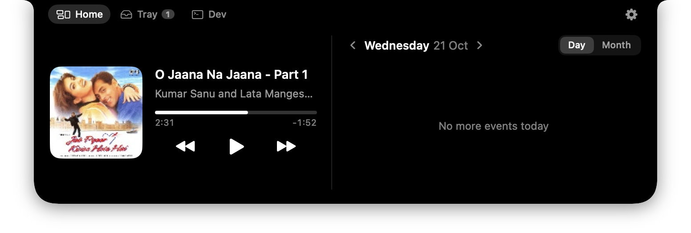
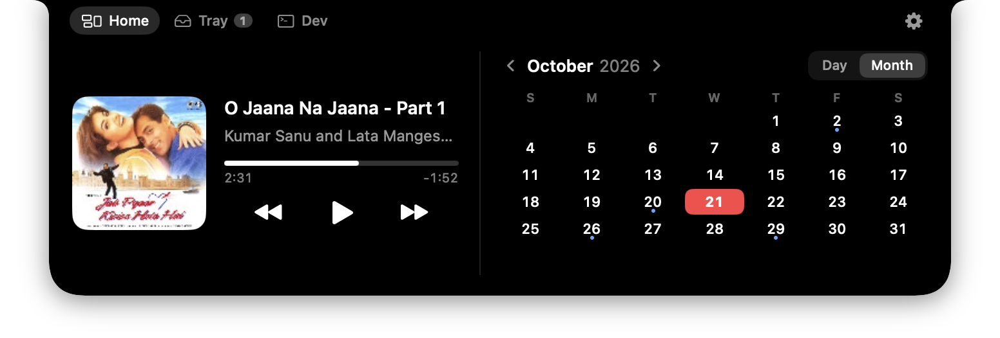
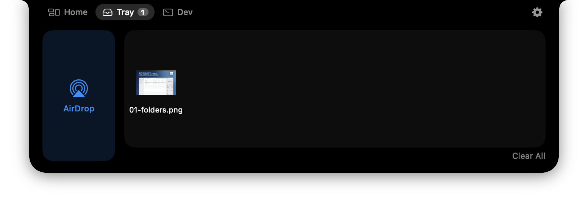
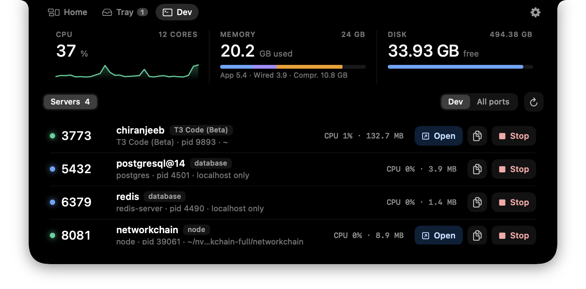
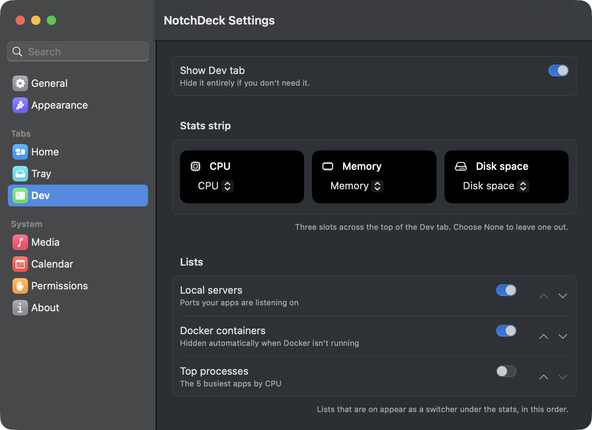

Now Playing, for any app
Artwork, seekable progress and play, pause and skip for whatever macOS is playing: Spotify, Music, Podcasts or YouTube in a browser. The closed notch shows album art and a live level meter.
Free & open source · macOS 14+
NotchDeck turns the MacBook notch into a little control deck for your music, files, calendar and the dev servers running on your Mac. Hover to open. Move away and it tucks back in.
Latest release · Universal (Apple silicon & Intel) · Notarized by Apple · MIT




Everything at the top of your screen
Artwork, seekable progress and play, pause and skip for whatever macOS is playing: Spotify, Music, Podcasts or YouTube in a browser. The closed notch shows album art and a live level meter.
Today's events at a glance, or a month view with dots on busy days. One-click Join for Google Meet, Zoom, Teams and Webex. Works with every account in the Calendar app.
Drop files onto the notch to keep them handy, then drag them out wherever you need them. Quick Look thumbnails, plus an AirDrop tile for sending to a nearby device.
Live system stats, every local server listening on your Mac with its project folder, and Docker containers you can start, stop and tail. Open, copy or stop anything in a click.
A scratch pad that lives in the notch and saves as you type. Perfect for a token, a command or a thought you need in ten minutes.
Hide tabs, choose the widgets on Home, pick your three Dev stats, reorder lists, choose calendars, and set hover or click to open. Updates arrive on their own via Sparkle.
Built for developers
localhost?Stop hunting through terminals for that forgotten server on port 3000. The Dev tab lists every server listening on your Mac with its project folder, CPU and memory, and lets you open it, copy its URL or stop it.
Configurable
A proper Settings window with a sidebar. Turn tabs off, decide what sits on either side of Home, choose which calendars appear and reorder the Dev lists. NotchDeck lives in the menu bar with no Dock icon, and Macs without a notch get a slim handle instead.

See how much of your Claude and Codex usage window is left, and when it resets, right from the notch. No more surprise rate limits halfway through a refactor.
Get started in a minute
Grab the DMG, open it and drag NotchDeck to Applications. Signed and notarized by Apple, so it opens without warnings.
Download the DMGPrefer the terminal? Install the cask from the tap:
macOS 14+ and Xcode 15 or the Swift command line tools.
git clone https://github.com/chiranjeebhub/NotchDeck.git
cd NotchDeck && ./scripts/build-app.sh
open build/NotchDeck.appNotchDeck asks for Calendar access the first time it needs it, and Automation only as a fallback for controlling Spotify or Music. It's distributed outside the Mac App Store because the sandbox would rule out system-wide Now Playing and the Dev tab.